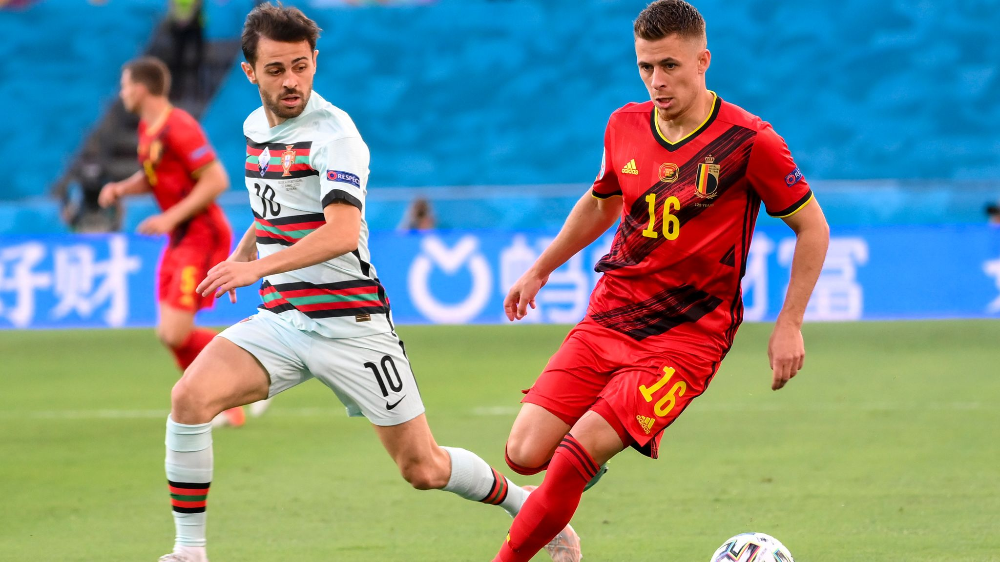
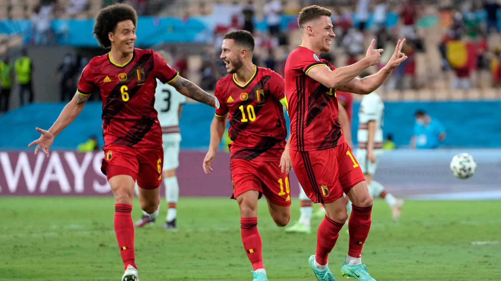
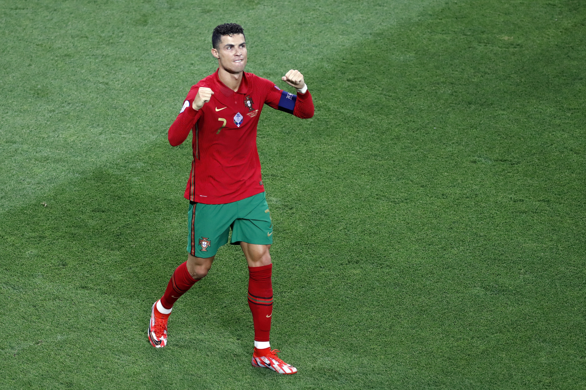

-
Belgium Dispatch Portugal To Book Spot In Quarterfinal
by Mitchel Green - June 27, 2021
|
mitchgr@umich.edu

Final Score: Belgium 1-0 Portugal
The first blockbuster matchup of the knockout stage saw Belgium take on 2016 champions Portugal. Cristiano Ronaldo and company put up a decent fight, but Belgium were able to see out the game after a phenomenal strike from Thorgan Hazard. Here are five key takeaways from the match:
1. Belgium Take Care Of Business… And They Could Still Be Better
To an extent, Belgium have dominated the tournament so far, and I still don’t think we’ve seen them at their best. Portugal can be a tough matchup for even the best teams as France showed in the group stage, but Belgium came out of this matchup relatively unscathed. They didn’t dominate the ball, but Portugal was rarely able to get the ball in threatening positions. The created hardly anything on the offensive end, but an excellent goal before halftime meant they didn’t need to. Kevin De Bruyne came off with an injury at the start of the second half, and his availability could determine this team’s ceiling, but Belgium should have the talent to dominate any team in this tournament when they are at the top of their game. Belgium have a tough road to the final ahead of them, and they will need to find another gear going forward, but they definitely have it in them to do it.

2. Portugal Needed A Spark From The Start
Would the result have been different if Bruno Fernandes had started the game? Who knows? The Manchester United midfielder didn’t exactly dominate the two games he previously started in this tournament. That said, he’s still Portugal’s best creative passer, and that’s something they desperately needed in this game. You could make the argument that Bruno Fernandes doesn’t fit the national team system, that the role he fulfils at United is not the same one he’s needed for with Portugal and he’s not as effective with lower usage. However, that may be more an indictment of the Portuguese system than it is Fernandes. When your system is such that your second most talented player over the last year and a half has to start on the bench, perhaps you need to change the system. I expect to see more of a move towards Fernandes as the key figure as the Ronaldo era comes to a close, but it’s a shame Portugal won’t be able to make them both work together.
3. Where Does Portugal Go From Here?
Cristiano Ronaldo is 36 years old. Portugal are likely going to get one more major tournament out of him, and who knows how good he will be come November 2022. Portugal were able to get one major trophy out of the best player in team history, so it won’t be a huge loss if they can’t bring home the World Cup, but if they are ever going to get close this is their last chance. With how little time there is before qualifying and the actual tournament, it may not be time to make a change in manager. At the international level, stability is typically the key to success. However, the European Championships gave the idea that Fernando Santos might not know how to unlock the potential of his team, and particularly his extraordinarily talented offense. Whatever Portugal decide to do, they’re going to need to do it fast so they can be ready to go when World Cup qualifying starts back up in September.

4. Static Game Continues Trend Of Tournament
I’m not quite sure what the consensus is on this tournament right now, but I am firmly in the camp that this tournament has been bad. There have been some good games, sure, but on the whole I think the level of play has been really poor. While the end of this match picked up in pace and intensity, much of the game was extremely dull. Little moments of flair were sprinkled into a game that had numerous passages of play with both teams standing around waiting for the other to make a move. This has been a trend for much of the Euros, and that shouldn’t surprise anyone. Not only does tournament soccer usually favor a conservative approach, but most of these players look exhausted after playing 50-60 games with their clubs since August. We were seeing this with the club game as well towards the end of this past season, as safetyball was the main tactic of the two finalists in the Champions League. These players not only deserve, but need a long rest at some point, and for the good of their careers, hopefully they can get one sooner rather than later.
5. Predictions For The Rest Of The Tournament
At the moment, I’m not sure I can name a clear favorite for the tournament. I think Belgium and France could both be considered the most talented team remaining, but they both have been relatively underwhelming in their performances and have tough roads to get to the final. The winner of the England-Germany match on Tuesday definitely has a great chance given their path to the final, but again they have been underwhelming given their talent level. I’ll just run through some quick (probably wrong) predictions for the remaining games: France, Spain, Sweden, and England all advance to the quarterfinals. Belgium, France, England, and Denmark move on to the semi finals. Belgium and England make it to the final where Belgium wins it all. I’m not super confident in that however, as this is looking like a hard tournament to predict. We shall see.